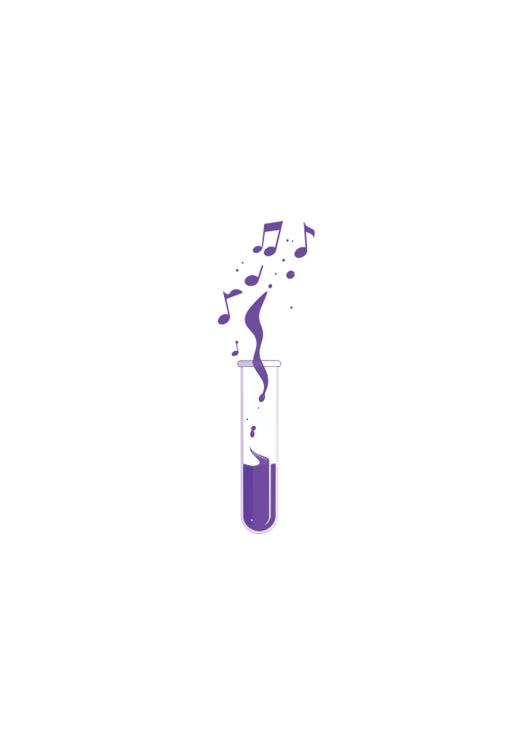
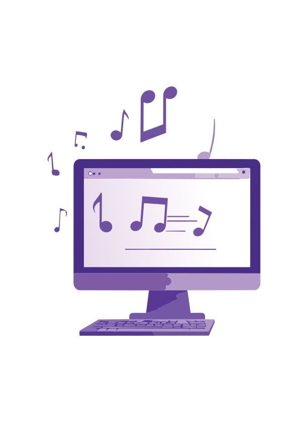
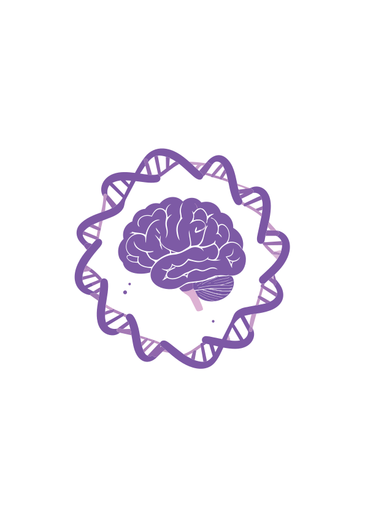
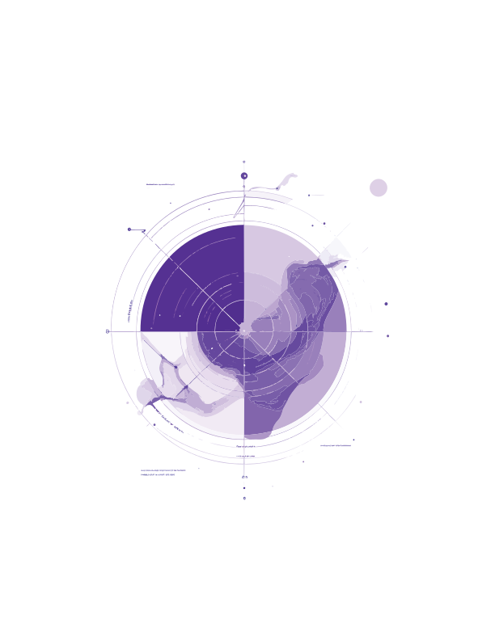
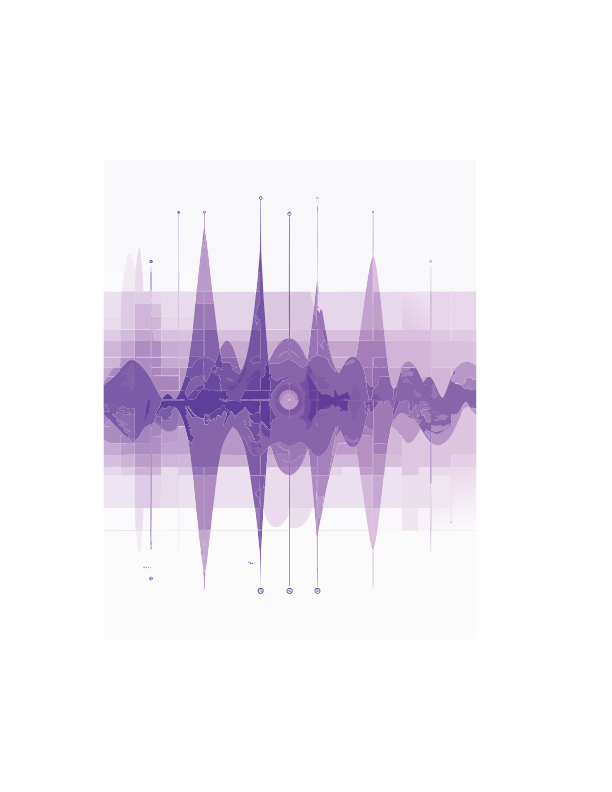
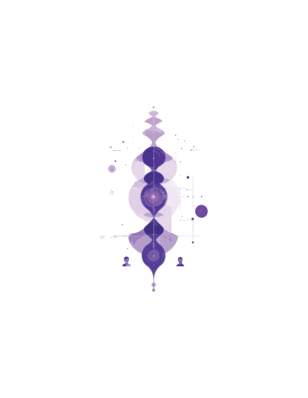
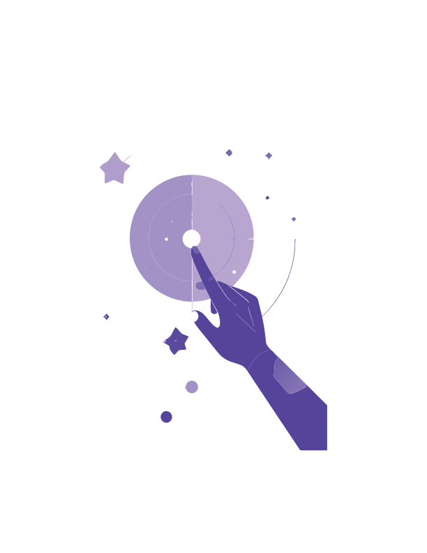
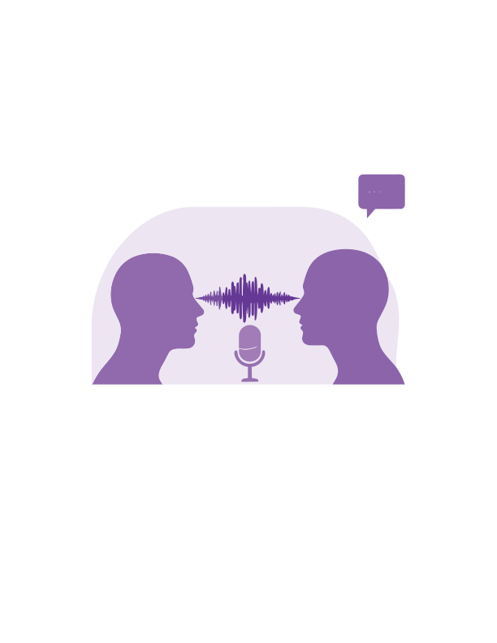

Algorithmically generated systems trained on human creativity without consent have given machine-made music its rightfully earned reputation.
not to replace artists or generate music from stolen data, but to help composers explore new timbres, map the body's response to sound, and surface patterns that musicians already sense intuitively.
Random Forest models trained on biosignals from real listening sessions (EDA, PPG, ECG) achieved R²=0.937 for valence. Every top predictive feature was spectral, not harmonic.
Eight modules spanning the full design-build-test-learn cycle. Listen, interact, and contribute your own ratings to train the next model.
Choose any section to explore.







